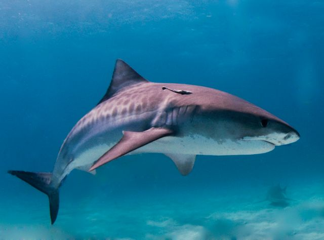
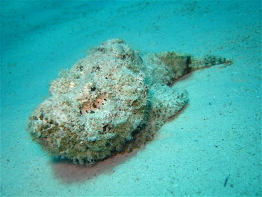

La Morphologie du dodo
On décrivait donc l'oiseau comme étant gros et pataud, sur de courtes pattes jaunes, pesant environ 23 kilos et possédant un énorme bec à l'allure saugrenue. Les écrits décrivent cet oiseau avec un plumage gris, plus pâle sur la tête, muni d'une touffe de plumes blanches en guise de queue.

Le sternum était insuffisant pour permettre le vol ; les dodos ont évolué pour s'adapter à un écosystème insulaire sans prédateurs. Les prédateurs les plus dangeureux de l'ile maurice son les requins bouledogue et les poisson-pierre.
|  |  |